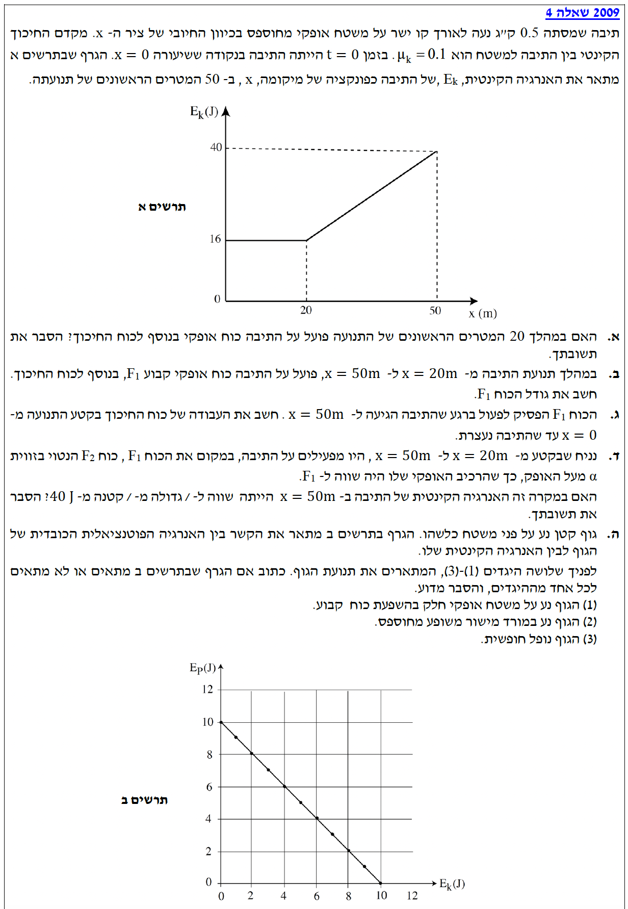

נושאים: קינמטיקה, דינמיקה, עבודה ואנרגיה, קריאת גרפים.
עודכן:--- --:--:--

[תמונת השאלה המקורית]לא נמצאה תמונה בשם question-image.png באותה תיקייה.
נתונים כלליים ותרשים כוחות
שלב 0 - המרת יחידות (MKS): מסת התיבה היא במידות תקניות \(m = 0.5\text{ kg}\). המיקום נמדד במטרים והאנרגיה בג'אולים, כך שאין צורך בהמרות נוספות.
מקדם החיכוך הקינטי נתון כ- \(\mu_k = 0.1\). תאוצת הכובד נקבעת כ- \(g = 10\text{ m/s}^2\).
תרשים כוחות (FBD) כללי לתנועה אופקית (עבור סעיפים א-ג)
הערה: קבענו את ציר x החיובי כיוון התנועה (ימינה), ואת ציר y החיובי כלפי מעלה. הכוח האופקי \(F\) מסומן בקו מקווקו מכיוון שקיומו תלוי בסעיף הנדון.
סעיף א'
מה נתון: מתוך תרשים א' (גרף אנרגיה קינטית כפונקציה של מקום), ניתן לראות כי ב-20 המטרים הראשונים (בין \(x = 0\) ל- \(x = 20\text{ m}\)), האנרגיה הקינטית של התיבה נשארת קבועה בערך של \(E_k = 16\text{ J}\).
מה מחפשים: האם פועל כוח אופקי נוסף מלבד כוח החיכוך, ולהסביר מדוע.
נוסחאות ועקרונות בשימוש: \(E_k = \frac{1}{2}mv^2\)\(\Sigma F = ma\)
פתרון צעד-אחר-צעד:
מכיוון שהאנרגיה הקינטית \(E_k\) קבועה בקטע זה, נובע מהנוסחה \(E_k = \frac{1}{2}mv^2\) שגודל המהירות קבוע.
התיבה נעה לאורך קו ישר (ציר ה-x). כאשר גוף נע בקו ישר וגודל מהירותו קבוע, כיוון המהירות גם הוא אינו משתנה, ולכן וקטור המהירות קבוע והתאוצה שווה לאפס (\(a = 0\)).
לפי החוק השני של ניוטון, אם התאוצה היא אפס, סכום הכוחות הפועלים על הגוף חייב להיות אפס:
\[ \Sigma F_x = 0 \]
אנו יודעים שהתיבה נעה על משטח בעל חיכוך קינטי הפועל נגד כיוון התנועה. אם חיכוך היה הכוח היחיד בציר האופקי, הכוח השקול לא היה אפס וגודל המהירות היה קטן.
מכאן, חובה שפועל כוח אופקי נוסף באותו גודל של כוח החיכוך ובכיוון הפוך (כיוון התנועה), כדי לאפס את הכוח השקול.
תשובה סופית: כן, פועל כוח אופקי נוסף בכיוון התנועה, שגודלו שווה בדיוק לגודל כוח החיכוך הקינטי, ולכן הכוח השקול מתאפס והמהירות נשארת קבועה.
הערת מורה:
הרבה פעמים תלמידים מבלבלים בין מהירות לתאוצה. זכרו תמיד: חיכוך תמיד מנסה לשנות את המהירות (להקטין את גודלה). אם גרף האנרגיה, ולכן המהירות, נשאר מישורי וישר במשטח מחוספס - מישהו חייב לסחוב או למשוך קדימה כדי "לנצח" את החיכוך ולשמור על התנועה בקצב אחיד!
סעיף ב'
מה נתון: בקטע שבין \(x = 20\text{ m}\) ל- \(x = 50\text{ m}\), פועל כוח אופקי קבוע \(F_1\). מתוך הגרף אנו קוראים נתונים נוספים: האנרגיה הקינטית ההתחלתית לקטע זה היא \(E_{k1} = 16\text{ J}\) והאנרגיה הקינטית הסופית היא \(E_{k2} = 40\text{ J}\).
מה מחפשים: את גודלו של הכוח האופקי \(F_1\).
נוסחאות ועקרונות בשימוש: \(W = F_x \Delta x = F \cos\theta \Delta s\)\(W_{\text{total}} = \Delta E_k\)\(f_k = \mu_k N\)\(\Sigma F_y = m a_y\)
חישוב:
שלב 1: חישוב כוח החיכוך
ראשית, נחשב את כוח החיכוך. נרשום את משוואת הכוחות בציר האנכי (y), שם אין תנועה ולכן אין תאוצה:
\[ \Sigma F_y = N - mg = 0 \quad \Rightarrow \quad N = mg \]
נציב את הנתונים (\(m=0.5\text{ kg}\), \(g=10\text{ m/s}^2\)) ונקבל: \(N = 0.5 \cdot 10 = 5\text{ N}\).
כעת נחשב את גודל כוח החיכוך הקינטי:
\[ f_k = \mu_k N = 0.1 \cdot 5 = 0.5\text{ N} \]
שלב 2: משפט עבודה-אנרגיה
נשתמש במשפט עבודה ואנרגיה. העבודה הכוללת מורכבת מעבודת הכוח \(F_1\) ועבודת החיכוך \(f_k\) לאורך העתק של \(\Delta x = 50 - 20 = 30\text{ m}\):
\[ W_{\text{total}} = \Sigma F_x \cdot \Delta x = (F_1 - f_k) \cdot \Delta x \]
תשובה סופית: גודל הכוח \(F_1\) הוא \(1.3\text{ N}\).
הערת מורה:
שימו לב כמה שימוש במשפט עבודה-אנרגיה מקצר את הפתרון! אם היינו רוצים לפתור בקינמטיקה, היינו צריכים לחלץ את המהירויות מהאנרגיות, לחשב תאוצה ממשוואת מהירות-מקום, ורק אז להציב בחוק השני של ניוטון. גישת האנרגיה ישירה, חוסכת שלבים, ומקטינה סיכוי לשגיאות חישוב. תמיד העדיפו אנרגיה על פני קינמטיקה כשניתן!
סעיף ג'
מה נתון: ברגע שהתיבה הגיעה למיקום \(x = 50\text{ m}\) הפסיק לפעול הכוח \(F_1\). בנקודה זו, כפי שקראנו מהגרף, האנרגיה הקינטית היא \(E_k = 40\text{ J}\). התיבה ממשיכה לנוע עד שהיא נעצרת לחלוטין (כלומר בנקודת הסיום \(E_k = 0\)).
מה מחפשים: את העבודה הכוללת של כוח החיכוך בקטע התנועה מההתחלה (\(x = 0\)) ועד העצירה המוחלטת.
עיקרון חיבור עבודות: עבודה כוללת לאורך מסלול היא סכום העבודות במקטעים השונים.
חישוב:
נחלק את חישוב עבודת החיכוך לשני מקטעים פשוטים. כבר חישבנו בסעיף הקודם שגודל כוח החיכוך הוא קבוע לאורך כל התנועה האופקית ושווה ל- \(f_k = 0.5\text{ N}\).
מקטע ראשון: מ- \(x = 0\) עד \(x = 50\text{ m}\)
העתק במקטע זה הוא \(\Delta x_1 = 50\text{ m}\). החיכוך פועל נגד התנועה (זווית \(180^\circ\)):
כדי למצוא את עבודת החיכוך כאן מבלי לחשב את המרחק, נשתמש במשפט עבודה-אנרגיה. במקטע זה הכוח היחיד שעושה עבודה הוא החיכוך (אין \(F_1\), וכוחות הכובד והנורמל מאונכים לתנועה). לכן העבודה הכוללת במקטע זה שווה לעבודת החיכוך. האנרגיה הסופית היא אפס, וההתחלתית היא \(40\text{ J}\):
תשובה סופית: עבודת כוח החיכוך מתחילת התנועה ועד העצירה היא \(-65\text{ J}\).
הערת מורה:
זכרו היטב: עבודת כוח החיכוך הקינטי היא תמיד שלילית! זאת משום שכוח החיכוך תמיד מופנה בניגוד לכיוון ההתקדמות של הגוף (\(\cos 180^\circ = -1\)). אם קיבלתם בחישוב עבודת חיכוך חיובית, עצרו ובדקו את הדרך, כנראה שפספסתם מינוס.
סעיף ד'
מה נתון: מופעל כוח חדש \(F_2\) בקטע מ- \(x=20\) ל- \(x=50\) במקום הכוח \(F_1\). כוח זה נטוי בזווית \(\alpha\) מעל לאופק. הרכיב האופקי של הכוח החדש שווה לכוח המקורי: \(F_{2x} = F_1\).
מה מחפשים: לקבוע האם האנרגיה הקינטית במיקום \(x=50\text{ m}\) תהיה שווה, גדולה או קטנה מ- \(40\text{ J}\), ולהסביר מדוע.
ננתח את הכוחות בציר האנכי עם הכוח החדש \(F_2\). לכוח זה יש רכיב כלפי מעלה \(F_{2y}\). נרשום את משוואת הכוחות:
\[ \Sigma F_y = N + F_{2y} - mg = 0 \quad \Rightarrow \quad N = mg - F_{2y} \]
ניתן לראות בבירור שהכוח הנורמלי (\(N\)) קטן יותר לעומת המצב הקודם בו היה שווה רק ל- \(mg\).
מכיוון שכוח החיכוך תלוי ישירות בכוח הנורמלי (\(f_k = \mu_k N\)), אם הנורמל קטן יותר, אז גם גודל כוח החיכוך החדש קטן יותר מאשר בסעיף ב'.
נבחן את הכוח השקול בציר האופקי, המבצע עבודה על הגוף:
\[ \Sigma F_x = F_{2x} - f_{k,\text{new}} \]
נתון לנו כי \(F_{2x} = F_1\). לכן, אנו מחסרים כוח חיכוך קטן יותר מאותו כוח משיכה קדמי. המסקנה היא שהכוח השקול בציר האופקי כעת גדול יותר.
מאחר וההעתק (\(\Delta x\)) זהה, העבודה הכוללת (\(W_{\text{total}} = \Sigma F_x \cdot \Delta x\)) תהיה גדולה יותר. לפי משפט עבודה ואנרגיה, עלייה גדולה יותר בעבודה גוררת עלייה גדולה יותר באנרגיה הקינטית.
תשובה סופית: האנרגיה הקינטית ב- \(x=50\text{ m}\) תהיה גדולה מ- 40 ג'אול.
הערת מורה:
מושג חשוב! משיכת גוף בזווית כלפי מעלה "מקלה" על המשטח לשאת את משקל הגוף, ובכך מקטינה את הלחיצה (הכוח הנורמלי). פחות לחיצה = פחות חיכוך. זו הסיבה שלרוב קל יותר למשוך מזוודה עם ידית אלכסונית מאשר לדחוף אותה ישירות במקביל לרצפה!
סעיף ה'
מה נתון: נתון "תרשים ב" המתאר קשר ליניארי יורד בין האנרגיה הפוטנציאלית הכובדית (\(E_p\)) לבין האנרגיה הקינטית (\(E_k\)) של גוף נע. מוצגות 3 אפשרויות: תנועה אופקית, מורד משופע מחוספס, או נפילה חופשית.
מה מחפשים: לקבוע איזה מן ההיגדים מתאים לגרף ולהסביר מדוע.
משוואת הישר היא לכן \(E_p = -E_k + 10\). נעביר אגפים ונקבל:
\[ E_p + E_k = 10\text{ J} \]
סכום האנרגיות \(E_p + E_k\) הוא למעשה האנרגיה המכנית הכוללת של המערכת. המשוואה מראה שהאנרגיה המכנית נשמרת וערכה קבוע (\(10\text{ J}\)). משמעות הדבר היא שאין כוחות לא-משמרים שעושים עבודה (\(W_{nc} = 0\)).
נפסול או נאשר את ההיגדים בהתאם לכלל זה:
הגוף נע על משטח אופקי... - אם הגוף באותו גובה (אופקי), האנרגיה הפוטנציאלית \(E_p\) צריכה להישאר קבועה. בגרף היא משתנה באופן רציף, לכן היגד זה אינו מתאים.
הגוף נע במורד מישור משופע מחוספס - משטח מחוספס משמעו שיש עבודת חיכוך. חיכוך הוא כוח לא-משמר המבצע עבודה שלילית, לכן האנרגיה המכנית צריכה לקטון ולא להישמר. היגד זה אינו מתאים.
הגוף נופל חופשית - בנפילה חופשית הכוח היחיד שפועל ומבצע עבודה הוא כוח הכובד. כוח הכובד הוא כוח משמר. לכן, אין עבודה של כוחות לא-משמרים והאנרגיה המכנית נשמרת לחלוטין - אנרגיה פוטנציאלית הופכת לאנרגיה קינטית ביחס של 1 ל-1, בדיוק כפי שהגרף (שיפוע -1) מתאר.
תשובה סופית: ההיגד המתאים הוא (3) הגוף נופל חופשית.
הערת מורה:
כאשר אתם נתקלים בגרף שאינו גרף קינמטי רגיל (כמו מיקום-זמן), נסו לחלץ את המשוואה המתמטית שלו! ברגע שראינו שמשוואת הקו היא \(y = -x + c\) ובמונחים פיזיקליים \(E_p = -E_k + E_{\text{total}}\), יכולנו להסיק מיד שמדובר בחוק שימור אנרגיה. אל תנסו "לנחש" לפי צורת הגרף, תנו למתמטיקה לספר לכם איזה חוק פיזיקלי מסתתר שם.
נוסח השאלה המקורית
[תמונת השאלה המקורית]לא נמצאה תמונה בשם question-image.png.